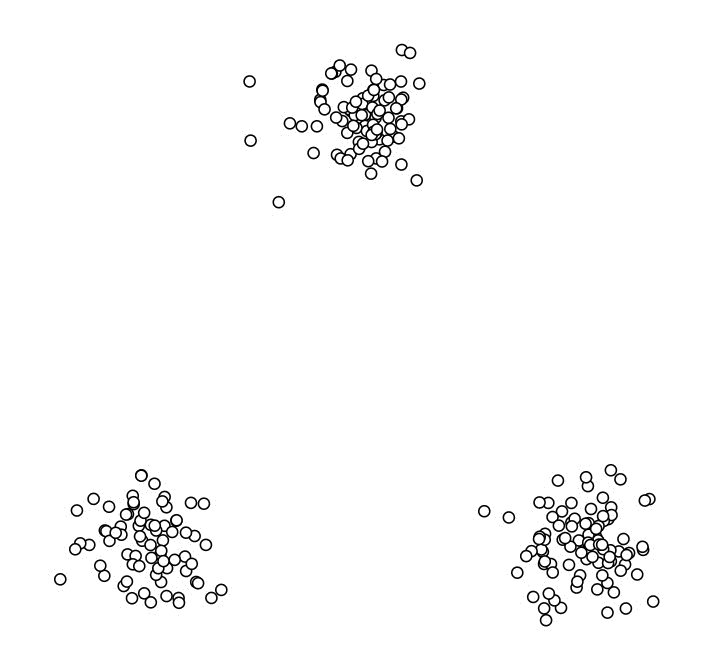

在“无监督学习”中，训练样本的标记信息是未知的，目标是通过对无标记训练样本的学习来揭示数据的内在性质及规律，为进一步的数据分析提供基础，此类学习任务中研究最多、应用最广的就是“聚类”。
本文将对几种常见的聚类算法进行简要的对比分析。（不涉及具体代码实现）
原型聚类(prototype-based clustering)
此类算法假设聚类结构能通过一组原型刻画，在现实聚类任务中极为常用。通常情形下，算法先对原型进行初始化，然后对原型进行迭代更新求解。采用不同的原型表示、不同的求解方式，将产生不用的算法。比较著名的原型聚类算法包括：
- K 均值算法（K-means）
- 学习向量量化（Learning Vector Quantization）
- 高斯混合聚类（Maxture-of-Gaussian）
前两种用原型向量来刻画聚类结构的不同，而高斯混合聚类采用概率模型来表达聚类原型。
K-means 聚类
算法步骤：
- 首先我们选择一些类/组，并随机初始化它们各自的中心点。中心点是与每个数据点向量长度相同的位置。这需要我们提前预知类的数量(即中心点的数量)。
- 计算每个数据点到中心点的距离，数据点距离哪个中心点最近就划分到哪一类中。
- 计算每一类中中心点作为新的中心点。
- 重复以上步骤，直到每一类中心在每次迭代后变化不大为止。

该算法的优点是计算简便，速度较快。
缺点是需要预先设定数据聚成多少类这个超参数。这里可以使用肘部法则来判断。
学习向量量化
算法步骤：
- 对原型向量进行初始化。
- 迭代优化。每一轮迭代中，算法随机选取一个有标记训练样本，找出与其距离最近的原型向量，并根据两者的类别标记是否一致来对原型向量进行相应的更新。
- 若算法停止条件已满足（例如已达到最大迭代数，或原型向量更新很小），则将当前原型向量作为最终结果返回。
该算法优点是计算简便，易于解读。
缺点是内存使用较高，计算成本高。
高斯混合聚类
算法步骤：
- 选择簇的数量（与 K-Means 类似）并随机初始化每个簇的高斯分布参数（均值和方差）。
- 给定每个簇的高斯分布，计算每个数据点属于每个簇的概率。一个点越靠近高斯分布的中心就越可能属于该簇。
- 基于这些概率我们计算高斯分布参数使得数据点的概率最大化，可以使用数据点概率的加权来计算这些新的参数，权重就是数据点属于该簇的概率。
- 若算法停止条件已满足（例如已达到最大迭代数，或似然函数增长很少），则根据高斯混合分布确定簇划分。
该算法优点是簇可以呈现出椭圆形而不是仅仅限制于圆形。
缺点是对聚类中心均值的简单使用。
密度聚类(density-based clustering)
此类算法假设聚类结构能通过样本分布的紧密程度确定，通常情形下，密度聚类算法从样本密度的角度来考察样本之间的可连接性，并基于可连接样本不断扩展聚类簇以好的最终的聚类结果。
DBSCAN
DBSCAN 是一种著名的密度聚类算法，它基于一组“领域”（neighborhood）参数来刻画样本分布的紧密程度。
算法步骤：
- 任意选择一个点（既没有指定到一个类也没有特定为外围点），计算它的 NBHD(p,epsilon)判断是否为核点。如果是，在该点周围建立一个类，否则，设定为外围点。
- 遍历其他点，直到建立一个类。把 directly-reachable 的点加入到类中，接着把 density-reachable 的点也加进来。如果标记为外围的点被加进来，修改状态为边缘点。
- 重复步骤 1 和 2，直到所有的点满足在类中（核点或边缘点）或者为外围点。
算法优点是事先不必确定聚类的种类。
缺点是当数据量增大时，要求较大的内存支持 I/O 消耗也很大。
层次聚类(hierachical clustering)
此类算法试图在不同层次上对数据集进行划分，从而形成树形的聚类结构。数据集的划分可采用“自底向上”的聚合策略，也可采用“自顶向下”的分拆策略。
AGNES
AGNES 是一种采用自底向上聚合策略的层次聚类算法，它将数据集中的每个样本看做一个聚类簇，然后在算法运行的每一步中找出距离最近的两个簇类进行合并，该过程不断重复，直到达到预设的聚类簇个数。
算法步骤：
- 先对仅含一个样本的初始聚类簇和相应的距离矩阵进行初始化
- AGNES 不断合并距离最近的聚类簇，并对合并得到的聚类簇的距离矩阵进行更新
- 不断重复步骤 2，知道达到预设的聚类簇数
算法的优点是比较简单。
缺点是效率比较低，并且不具有再分配能力，即如果样本点 A 在某次迭代过程中已经划分给类簇 C1 ，那么在后面的迭代过程中 A 将永远属于类簇 C1 ，这将影响聚类结果的准确性。


如果长时间无法加载，请针对 disq.us | disquscdn.com | disqus.com 启用代理